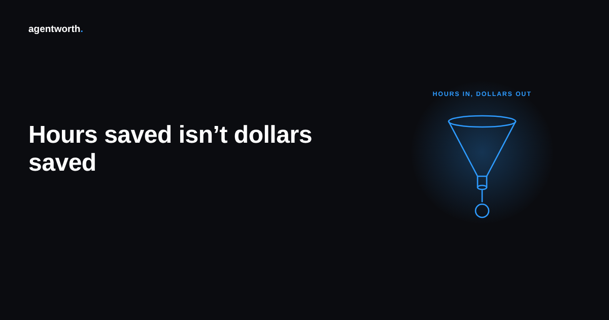

Why hours saved and dollars saved are not the same number

A support leader tells finance the AI agent freed up forty hours a week of agent time. Multiply by a loaded hourly rate, and there it is, a clean monthly dollar figure, ready for the slide. Nobody in that chain did anything dishonest. They just skipped a question that matters more than the multiplication: what actually happened to those forty hours.
An hour of freed time is not automatically an hour of saved money. It becomes money in exactly three ways, and most ROI dashboards only ever check whether the hour was freed, never which of the three it turned into.
The three things that can happen to a freed hour
First, the hour gets reallocated to work that previously went undone or got outsourced, a backlog of escalations, proactive outreach, account reviews, something with its own measurable value. Second, the hour lets a team avoid a hire or a contractor renewal it would otherwise have needed, a real and checkable reduction in planned spend. Third, and far more common than anyone likes to admit, the hour simply evaporates into slack. The team feels a bit less rushed. Nothing on the org chart changes. No invoice gets smaller.
Only the first two are savings a finance team should book. The third is a genuine improvement in working conditions, and there is nothing wrong with it, but it is not a dollar figure, and treating it like one is how an ROI slide quietly becomes fiction that everyone in the room is too polite to question.
Why the dashboard cannot tell these apart on its own
Most agent platforms measure what they can see, which is ticket volume and time per ticket. They have no visibility into the staffing plan, the hiring pipeline, or what a support rep actually did with the twenty extra minutes in their day. So the dashboard does the only thing it can: it reports the hours, applies a blended rate, and leaves the harder question, did this change any actual spending, for someone downstream to answer or more often to skip.
That gap is exactly where an inflated ROI number is born, and it is rarely the result of anyone lying. It is the result of a measurement that stopped one step short of where the real evidence lives.
The one question that separates real savings from a nice feeling
Before a saved hours number goes anywhere near a board deck, ask the team one direct question: what did we do with the freed time. A good answer names something concrete. We reassigned two reps to churn outreach and here is what that produced. We did not renew a contractor contract that was due in March. We held headcount flat through a growth quarter where we would normally have hired. A vague answer, the team has more breathing room now, or support feels less stressed, is a real and worthwhile outcome, but it belongs in an engagement survey, not a savings column.
This test costs nothing and catches most of the inflation on its own. It also tends to produce a smaller, more defensible number than the raw multiplication, which is usually a sign the smaller number is the true one. A finance team that has sat through enough vendor pitches has learned to discount any savings figure that cannot survive this one question, so it is worth asking it yourself before someone else does.
What a verified number does differently
A defensible ROI figure traces each hour of claimed savings to an actual change in cost, headcount, or output, not just to a drop in time per ticket. That means keeping a record of what freed capacity was used for alongside the record of what the agent resolved, so the two can be checked against each other instead of one standing in for the other. That is the audit trail agentworth keeps underneath the headline number, so the figure finance signs off on is tied to something that happened, not just something that was freed up. Try the free ROI calculator to see how your own numbers hold up, or read the full ROI report for more on what a defensible figure actually requires.